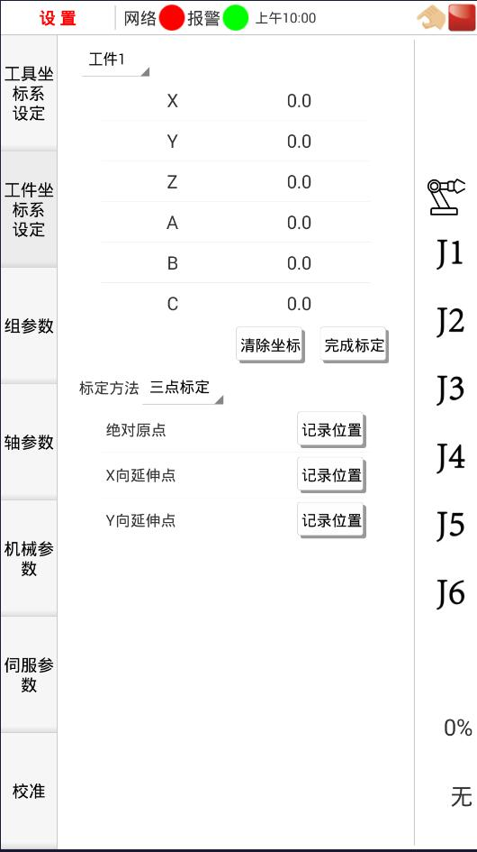

4.1喷漆前的准备
4.1.5工作台工件坐标系设定
工件坐标系是由用户在工件空间定义的一个笛卡尔坐标系。工件坐标包括:（ X,Y,Z）用来表示距原点的位置，（ A,B,C）用来表示绕 X-， Y-， Z-轴旋转的角度。与工具坐标系相同， 机器人控制系统支持16个工件坐标系设定，每个工件坐标系可以属于不同的组号，也可为每个工件坐标系添加相应的注释说明。
喷漆过程需要建立一个工件坐标系。点击工件坐标设定，即可进入工件坐标系界面， 如图4-7所示， 右边窗口上部分显示所有工件坐标系，下窗口显示当前选中工件号的坐标值。当上窗口中的工件号变动时，下窗口的坐标值也随之变化。

工件坐标系标定